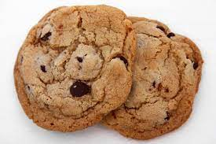

Cookies

Descripton
This is an easy recipe for soft chocolate chip cookies
Ingredients
- 125g butter
- 50g Brown Sugar
- 50g easter sugar
- 1 tsp vanilla
- 225g flour
- 1/3 tsp baking powder
- Pinch of salt
- 300g of chocolate chips
Instructions
- Preheat the oven to 400 degrees F. Line 2 baking trays with baking paper
- Beat the butter and both types of sugar together using an electric whisk. Add the egg and vanilla and beat some more.
- Sift in the flour, baking powder, and slat. Combine all ingredients.
- Stir in the chocolate chips
- Divide the mixture into 24 balls of dough and arrange them on the baking trays, leaving plenty of space between them.
- Bake for around 10 minutes util they are only slightely brown. Leave to cool and enjoy!